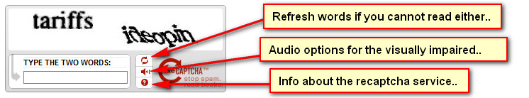
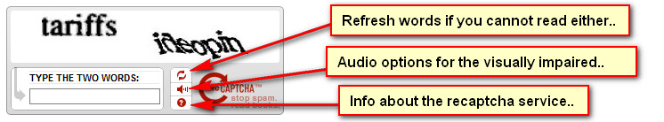

ReCaptcha Service
For spam prevention on the ticket creation page, Maian Support utilises the reCaptcha service from Google, a free anti-bot prevention solution. For more information,
click here. If you aren`t sure about spam or its terminology, click here. reCaptcha offers
a lot of flexibility with its code, so see below for more information.
Enable in Maian Support
Parameter Settings
Certain parameter settings, such as language and themes are found in the following file: admin/control/recaptcha.php
Themes
Custom Themes
You can also create your own custom theme. More info here.
Parameter changes may be required in the following theme file: content/*theme*/html/recaptcha.htm
Parameter changes may be required in the following theme file: content/*theme*/html/recaptcha.htm
Appearance on Ticket Creation Page
If correctly configured, something similar to below screenshot will appear on the ticket creation page:


SSL
SSL should be auto detected by Maian Support and reCaptcha should work fine on a secure server.
Google API Urls
These are set in the following file:
control/lib/recaptcha.php
If Google change these at any time, update the following values:
define("RECAPTCHA_API_SERVER", "http://www.google.com/recaptcha/api");
define("RECAPTCHA_API_SECURE_SERVER", "https://www.google.com/recaptcha/api");
define("RECAPTCHA_VERIFY_SERVER", "www.google.com");
control/lib/recaptcha.php
If Google change these at any time, update the following values:
define("RECAPTCHA_API_SERVER", "http://www.google.com/recaptcha/api");
define("RECAPTCHA_API_SECURE_SERVER", "https://www.google.com/recaptcha/api");
define("RECAPTCHA_VERIFY_SERVER", "www.google.com");